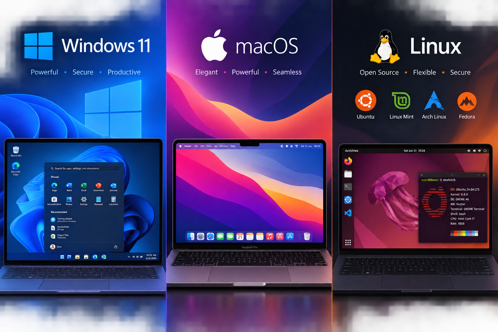

1. Pengertian Sistem Operasi (Operating System)
Sistem Operasi (OS) adalah perangkat lunak sistem paling mendasar yang mengelola seluruh sumber daya hardware komputer dan menyediakan antarmuka agar pengguna dapat menjalankan aplikasi.
2. Fungsi Utama
- Menjadi penghubung komunikasi antara hardware komputer dan aplikasi pengguna.
- Mengelola manajemen memori RAM, pemrosesan CPU, dan penyimpanan file.
- Menyediakan tampilan antarmuka visual grafis (GUI) seperti desktop dan folder.
3. Cara Kerja Sederhana
Saat komputer dinyalakan, BIOS memuat Operating System dari SSD ke RAM. OS lalu mengambil kendali penuh untuk mengatur alokasi daya, memori, dan layar desktop.
4. Contoh Penggunaan Sehari-hari
Microsoft Windows 11, Apple macOS pada MacBook, serta Ubuntu Linux adalah contoh Sistem Operasi populer.
Tips Pemula
Selalu perbarui (update) Sistem Operasi Anda secara berkala untuk mendapatkan tambalan keamanan (security patch) terbaru dari ancaman virus.
Fakta Menarik
Sistem operasi Linux bersifat open-source (gratis dan bebas dikembangkan) dan digunakan oleh mayoritas komputer server internet terpopuler di dunia.
Istilah Penting
GUI (Graphical User Interface): Tampilan antarmuka grafis visual.
Kernel: Inti pusat sistem operasi pengatur hardware.
Driver: Software jembatan antara OS dan perangkat keras spesifik.
Kernel: Inti pusat sistem operasi pengatur hardware.
Driver: Software jembatan antara OS dan perangkat keras spesifik.
Ringkasan Materi
- Sistem Operasi adalah software utama penyedia antarmuka komputer.
- Mengatur manajemen memori, file, aplikasi, dan perangkat keras.
- Windows, macOS, dan Linux merupakan Sistem Operasi komputer utama.